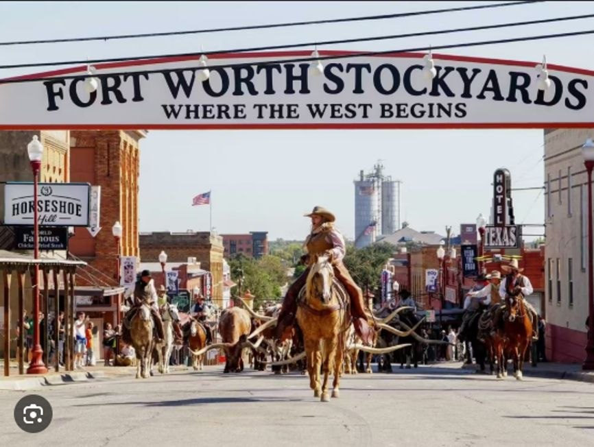

Two cities, one trip — planned around what's actually open and your real flights.

Your dates are still ~7 weeks out, so there's no real forecast yet — these are typical mid-October conditions for Dallas, day by day.
Built around one thing: the State Fair of Texas is in its final days of the season while you're there.
Landing from Salt Lake City. Gate seat assignment, so allow a little extra time getting off the plane.
An easy first stop after landing — a deck park built over a freeway with a playground, food trucks, and lawn games. Low-key way to stretch legs after travel.
The Exchange Food Hall or Rodeo Goat are both a short drive from downtown and flexible for picky eaters — see the Food tab.
Go on a Saturday for the full atmosphere: midway rides, the auto show, livestock barns, and fried everything. Fair Park is walkable, but plan for a long day — arrive early to beat crowds and heat.
Right on the fairgrounds — stingray touch tank and axolotls, a good cooler-down break between fair attractions for younger kids.
Part aquarium, part zoo — jaguars, sloths, and bats alongside the fish tanks. Go early; it gets tight with strollers by midday.
Self-guided, interactive, about an hour — good option if anyone in the group needs a break from walking-heavy stops.
The GeO-Deck gives a 360° view of the skyline — best right at sunset when the city lights start coming on.
Worth swapping in on a slower afternoon — checked against current hours for your dates.
The strongest all-ages pick in the city — hands-on exhibits, dinosaur fossils, and a kids' water-play area out front (bring a towel). Easily fills 3–4 hours.
General admission is free. Wide-ranging collection from ancient to contemporary — closed Mondays and Tuesdays, so plan around that.
Full-size aircraft, a space capsule, moon rocks, and a window to watch real takeoffs and landings next to Love Field. A hit if anyone in the group is into planes.
A thoughtful, text-heavy exhibit on the JFK assassination in the former book depository. Powerful, but better suited to older kids and teens than young children — closed Mon & Tue.
Dragon Street is Dallas's small-gallery strip — Craighead Green Gallery and CINQ Gallery are both an easy walk apart if anyone wants a contemporary-art detour.
A mix of easy family stops and one just-for-fun night out.
Casual burger spot with a big backyard-bar feel — reliable pick when the group can't agree on cuisine.
A food hall downtown with BBQ, Mediterranean, and crepes under one roof — good for splitting up when everyone wants something different.
Texan comfort food with a big patio and live music — family-style brunch on weekends.
All-day breakfast spot with big portions — a solid, fast option before a fair or museum day.
Fried chicken, biscuits, and a lively downtown brunch scene.
Servers dressed as movie characters, tables built into buses and lunchboxes — the "fun over food" night for kids.
If you're there on fair day, this is the one meal to just let happen — corny dogs, fried classics, and whatever oddity is trending that year.
Built for warm afternoons, cool mornings, and a lot of walking.
Same caveat — this is a typical mid-October day for Vegas, not a real forecast yet.
You land at 8:30am, so it's a real day — these are grouped by Strip location to cut down on walking.
Leaves Dallas Love Field (DAL) 7:35am. This is an early one, so bags should be packed and ready to go the night before — no time for a Dallas stop that morning.
Staying with your nephew visiting from Korea.
Free seasonal floral display inside the Bellagio — an easy, low-key first stop and usually the least crowded in the morning.
A shaded, tropical courtyard inside the Flamingo with real flamingos, koi, and turtles — a nice break from the casino floor and free to walk through.
Sharks, a stingray touch tank, and a shipwreck room — a reliable hit for kids and grandkids alike. Around $29/adult, $24/kid.
Same interactive concept as the Dallas one, different exhibits — skip if you already did the Dallas location, otherwise a fun rainy-day-proof option.
Worth it if the group wants one splashy, only-in-Vegas experience — book ahead, since shows and tickets sell out and it runs pricier than a typical outing.
All on or just off the Strip, easy to reach on foot from the Bellagio/Flamingo area.
Famously huge portions — the "twisted flapjack" pancake and chicken & waffles are built to share. Good first meal after an early flight.
French bistro with a patio right on the Strip facing the Bellagio fountains — good spot to time a meal around a fountain show.
Old-school Vegas diner, huge portions, booth seating, and a retro fireside lounge — a fun, kid-easy option off the main Strip crush.
Fried chicken and biscuits inside The Venetian — same easy family fit as the Dallas location, open late.
Dry desert heat by day, real chill after sunset, and a lot of Strip walking.
Add photos from the trip. Everyone with the link sees the same album, on any device.
No photos added yet.
Add photos from the trip. Everyone with the link sees the same album, on any device.
No photos added yet.